|
Castlevania :
Dracula X
Map

ภาคนี้เนื้อเรื่องจะดำเนินไปตาม Stage
ซึ่งจะมีเส้นทางให้ดูตามแผนที่
Stage 1
Boss 1
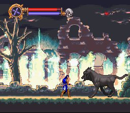
Stage Clear
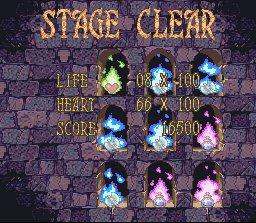
(เมื่อเล่นจบแต่ละ Stage จะได้รับ Password มาใช้)
Stage 2
Boss 2
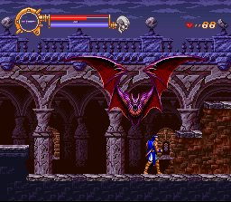
Stage 3
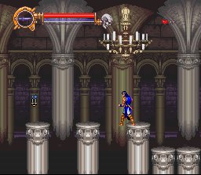
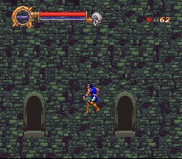
* Note : ในระหว่างทาง หากพลาดตกลงไปจะไปโผล่ที่ Stage
4'
ซึ่งจะไม่สามารถเก็บกุญแจ ทำให้ไม่สามารถช่วย Maria และ Anette ได้
Key
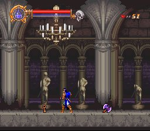
หากไม่พลาดท่า ตกลงไป ก่อนเจอ Boss 3 จะพบ "กุญแจ" ให้พกติดตัวไว้ตลอด
Boss 3
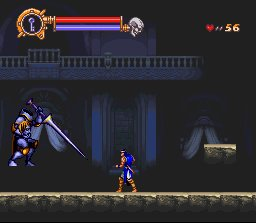
(เมื่อปราบ Boss 3 ได้ จะไปโผล่ที่ Stage
4)
Stage
4'
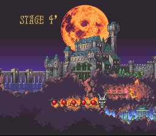
Boss 4'
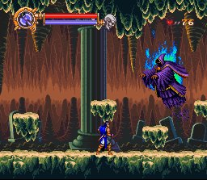
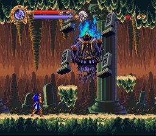
(Boss มี 2 ร่าง เมื่อปราบได้จะไปโผล่ที่ Stage
5)
Stage
5
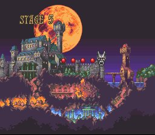
Boss 5
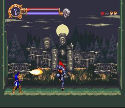
(เมื่อปราบ Boss 5 ได้ เมื่อไป Stage 6 จะเจอ Boss
6)
Stage 6
Boss 6
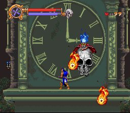
(เมื่อปราบได้จะไปสู่ Last Stage)
Last
Stage
Boss 7
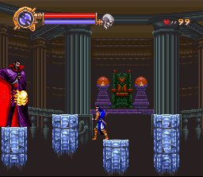
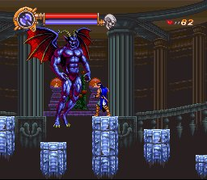
(Boss 7 มี 2 ร่าง)
(อาวุธที่ดีที่สุดที่ใช้ปราบคือ Axe)
(เมื่อปราบได้จะพบฉากจบ Ending)
|